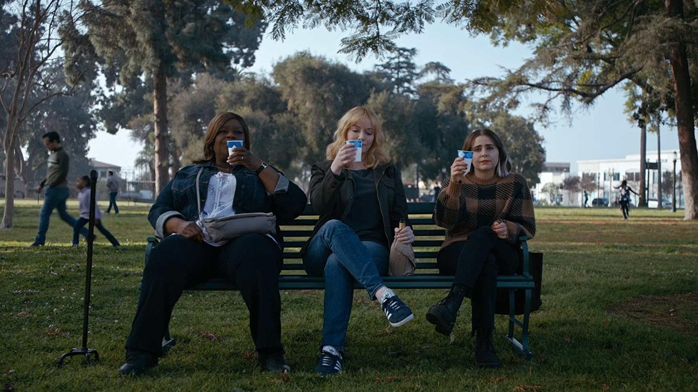
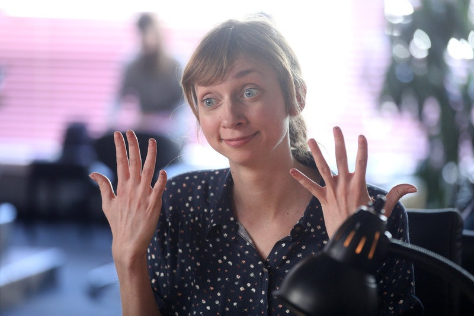
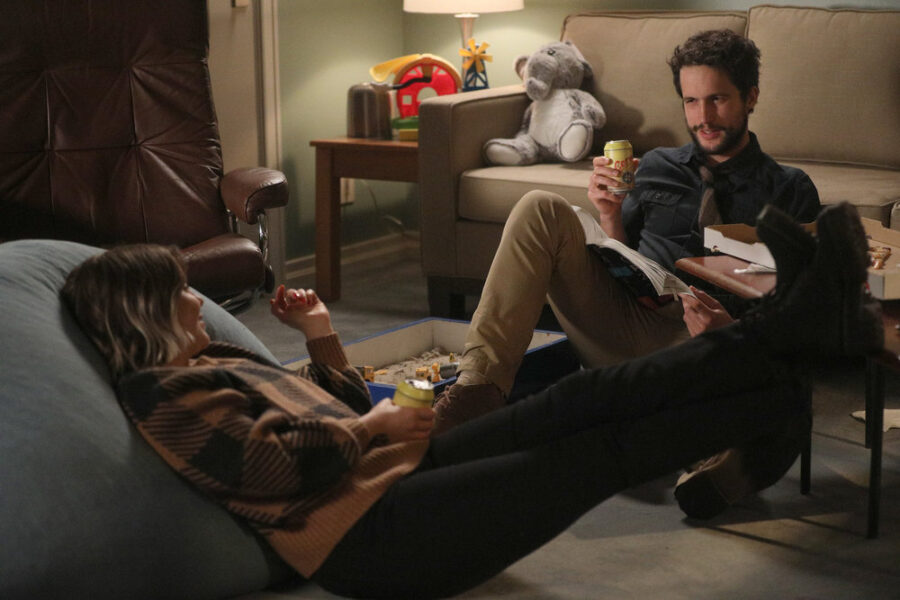

Good Girls: O que ficou em aberto para a 4ª temporada da série?
A terceira parte da série que está na Netflix teve que ser encurtada por conta do Coronavírus, mas a parte 4 já está confirmada.

Depois de mais de um ano de espera pela 3ª temporada de Good Girls na Netflix, a ansiedade dos fãs vai ter que segurar mais um pouco para conferir o que realmente irá acontecer com Beth, Annie e Ruby. É que a temporada 3 foi encurtada por conta da pandemia do Coronavírus e só nos deu 11 episódios, ao invés dos 16 prometidos, algumas questões que talvez fossem ser mais amarradas no finale real, ficaram pendentes.
Aviso de spoiler sobre a 3ª temporada de Good Girls!
Resumidamente, na 3ª temporada temos Beth (Christina Hendricks) trabalhando em uma papelaria, o que é muito conveniente, já que ela usa o maquinário da loja durante a noite para produzir o dinheiro falso. Ruby (Retta) agora trabalha como manicure e Annie (Mae Whitman) em uma loja de conveniência. As três acreditam que Rio (Manny Montana) está morto. Só que não. Ele volta, descobre o esquema delas e as obriga a trabalhar de novo para ele, produzindo e lavando o dinheiro. Vendo que precisa se livrar de vez de Rio, Beth decide contratar um atirador e comprar a loja de spas onde Dean (Matthew Lillard) trabalha, considerando essa a forma mais discreta de lavar o dinheiro falso.
Enquanto isso, Ruby enfrenta problemas no casamento com Stan (Reno Wilson) (que agora trabalha de segurança em uma boate de striptease) e com a filha. E Annie começa a fazer terapia. Com a morte de Turner (James Lesure) logo no início da temporada (morto por Rio, talvez?), uma nova agente começa a investigar o esquema das meninas.

O QUE ACONTECEU COM O ATIRADOR CONTRATADO POR BETH?
Depois de se recusar na primeira vez a fazer o serviço para Beth achando que Rio é um ex-namorado dela, ele faz um teste com a dona de casa e aprova a decisão de eliminá-lo. O problema é que até o fim da temporada não fica claro se ele vai mesmo fazer, quando, onde, como, se Beth desistiu da ideia, já que na cena final ela e Rio parecem estar "de boa"... O atirador pode ser mais perigoso que Rio e essa vai ser mais uma dívida eterna que Beth vai contrair?
COMO VAI FICAR A RELAÇÃO DE BETH E RIO?
De acordo com a showrunner Jenna Bans e o produtor executivo Bill Krebs, no início da 4ª temporada, os personagens deixarão de lado essa rivalidade e vão, de forma relutante, ter que trabalhar juntos. "A química que eles têm não é algo que pode ser extinto. Estamos realmente ansiosos para abordar isso na quarta temporada e tristes por não podermos mostrar aos fãs na terceira temporada. Você não passa do sexo mais quente da sua vida para querer alguém morto sem ter sentimentos conflitantes", explicam. É certo eu querer que Beth e Rio fiquem juntos de novo?

COMO A AGENTE PHOEBE VAI SE APROXIMAR DAS MENINAS?
Na última cena da temporada, vemos a policial abordar as amigas no parque, fingindo ser apenas a cliente que Ruby fez as unhas. Mas, pelo pouco que já vimos da personagem de Lauren Lapkus, deu para perceber que ela parece ser uma pessoa sozinha e ficou um pouco intrigada com a amizade tão próxima das três protagonistas. Por um lado, pode ser que ela deseje ter alguma relação assim e vá usar isso para se aproximar do trio para investigar. Será que teremos uma nova Mary Pat?
O QUE ACONTECEU COM BOOMER?
No final da 2ª temporada, Boomer (David Hornsby) se entrega pra polícia depois de se fingir de morto. No início da nova temporada, não sabemos que fim o gerente do Fine & Frugal levou, até que no oitavo episódio descobrimos que ele foi preso há três meses, mas não sem antes se encher de tatuagens. Até que Beth recebe uma nova missão de Rio que é nada menos que resgatar Boomer, após uma rebelião na prisão. Entretanto, elas têm que levá-lo para encontrar o bandido, que o leva embora sem explicações. Boomer está morto por saber demais? Rio o usará contra Beth, Ruby e Annie em algum momento?

ANNIE E JOSH TÊM CHANCE DE FICAREM JUNTOS?
Toda temporada temos Annie envolvida em algum dilema amoroso. Com o fim da relação com Noah (Sam Huntington), ela parece ter regredido e está procurando conforto em qualquer cara. Depois de ouvir do ex-marido Gregg (Zach Gilford), que está fazendo terapia de casal com a esposa, que o psicólogo considera Annie desequilibrada e perdida, ela resolve ir tirar satisfações com o profissional, mas acaba conhecendo Josh Cohen (Rob Heaps), um terapeuta infantil com quem se sente muito à vontade durantes as sessões e por quem, claro, Annie cria um sentimento que ela acredita ser mútuo. Até Josh revelar que tem namorada (que ele pede em casamento no fim da temporada!). Annie estava mesmo imaginando esse sentimento recíproco? Josh deu esperanças? Será que vamos conseguir a evolução da personagem a ponto de ela parar de depender emocionalmente dos caras? Fica o questionamento.